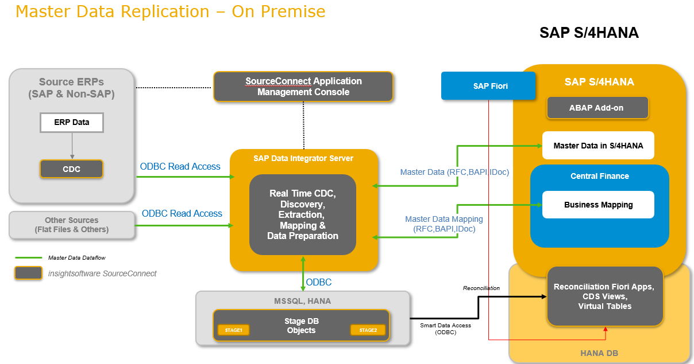

SAP Central Finance Master Data Replication by insightsoftware 10.0 for SAP S/4HANA
General Information
SAP Central Finance Master Data Replication by insightsoftware (formerly known as Magnitude) simplifies the integration of Third-Party Systems into the Central Finance scenario. The product supports and accelerates the Consolidation & Standardization, the Data Clean-Up & Business Mapping as well as the Data Load of Master Data from certain Third-Party source systems into the SAP S/4HANA Central Finance system. For a list of supported Third-Party systems please refer to the Release Notes. All guides are available in the Software Download Center (attached to the software package) and on the Partner Product Page.
SAP Central Finance Master Data Replication by insightsoftware can also handle data from SAP source systems, so that consolidation of master data from SAP and Non-SAP systems can be enabled.
The product supports the processing of following master data objects:
- Customer
- Vendor
- Material
- G/L Account
- Cost Center
- Internal Order
- Project (not from SAP systems)
The product supports the initial load and the ongoing replication of master data.
Installation
The product is available as OnPremise installation.
For deployment you need at least the following instances:
- SAP Data Services Instance, connected to SourceConnect Staging Database
- SourceConnect Management Console
- Central Finance on SAP S/4HANA 2025
What´s New
The new release of SAP Central Finance Master Data Replication by insightsoftware 10.0 includes the following new features:
- Support of Central Credit Management for Universal Connector
- CDC based delta loads of Master Data
For more information, please refer to the Release Notes Document in the “What´s New” section on the Partner Product Page.
Relevant SAPNotes
https://me.sap.com/notes/3747423
Customer Support
In case you encounter problems when installing, upgrading or running SAP Central Finance Master Data Replication by insightsoftware 10.0 for SAP S/4HANA, report an incident using component XX-PART-ISW-MDR.
Further Information
- Partner Product Page for SAP Central Finance Master Data Replication by insightsoftware 10.0: Link
- SAP Central Finance Product Assistance for SAP S/4HANA 2025: Link
- SAP Central Finance Master Data Replication by insightsoftware can be used in combination with SAP Central Finance Transaction Replication by insightsoftware. Please find more information on SAP Central Finance Transaction Replication on the Partner Product Page: Link
Framework of SAP Central Finance Master Data Replication
